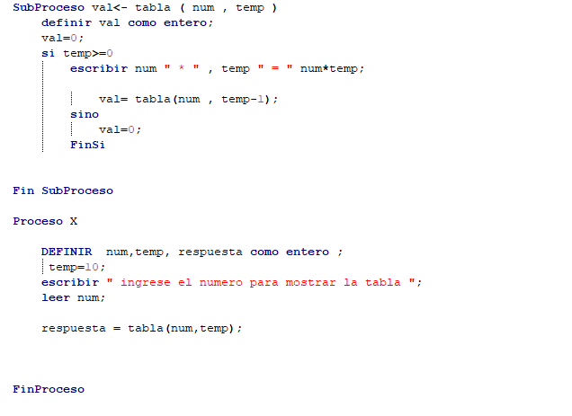

¿Qué es un ciclo sgun?
Cuando hablamosde un ciclo condicional segun o tambien llamado switch case. Un ciclo segun es parecido al cilo si o tambien llamado ciclo if, bueno son parecidos ya que cada en cada ciclo condiconal siempre hay una condicion para que suceda algo,si es verdadro ejecuta cierta accion el algoritmo y si no es verdadero ejecutara otra instruccion. El condicional segun es muy bueno al momento de trabajar con algun menu, como por ejemplo cuando te dicen: si tú eliges el numero 1 te ganas unas papatas, si elegis el 2 ganaras unsa soda, si eleiges el 3 te ganas un combo de patatas,soda y una rica amburguesa. Entonces un ciclo segun o (switch case) es una gran opcion ya que si trabajas en solo cilos si (if) podrias confundirte o cometer errores, cuando en tu algoritmo tienes qu elegir una o varias lineas de codigo que tengas que ejecutar en tu algoritmo.
Funciones como ciclos
como funciona un ciclo? , hace una serie de tareas dando un numero de vueltas determinado , pero se puede emplear algo asi en una funcion , pues si dejame decirte que si practico quiza no sea ya que el uso de memoria seria mucho mayor , pero se podria usar y te preguntaras entonces porque mencionarlo ? la verdad se menciona para que desde ya tengas en la mente que no existe una forma de cajon para hacer las cosas llevado a la practica seria un poco costoso porque en la llamada de este tendiras que usar un autosumable definir cuando termina y hacer los calculos. RECUERDA QUE ESTE TEMA ES SOLO PARA QUE TU SEPAS QUE SE PUEDEN REALIZAR MAS NO ES ACONSEJABLE SU USO YA QUE NO SERIAN LOS MAS EFICIENTES

¿se puede usar un proceso para recursividad?
Pues este es igual que el tema anterior se puden ahcer mas no quiere decir que este sea el mas factible en rederizar , porque para hacer esto se necesitaria hacer dos procesos que se llamen entre si hasta que se cumpla que termina el ciclo lo cual aca seria mas dificl de procesar ya que debemos enviar datos entre ambos procesos para asi no perder el contro de lo que se esta realizando RECUERDA QUE ESTE TEMA ES SOLO PARA QUE TU SEPAS QUE SE PUEDEN REALIZAR MAS NO ES ACONSEJABLE SU USO YA QUE NO SERIAN LOS MAS EFICIENTES
Buenas practicas en recursividad
de las mejores practicas que puedes usar y no solo en recursividad es el comentar el codigo y dejar explicito que hace y cual es la variable que se usa. El hacerlo en papel primero el planteo de como se realizaria de esa forma. El manejo de la salida porque al igual que en los ciclos podrias crear un ciclo infinito del cual no podrias salir de no ser por que Pseint te permite el paro total del programa pero imagina que de alguna forma esto llegara a un usuario , esto crearia un bug del cual saldria hasta que se acaba la memoria manejo de las varibles con nombres reconocibles.